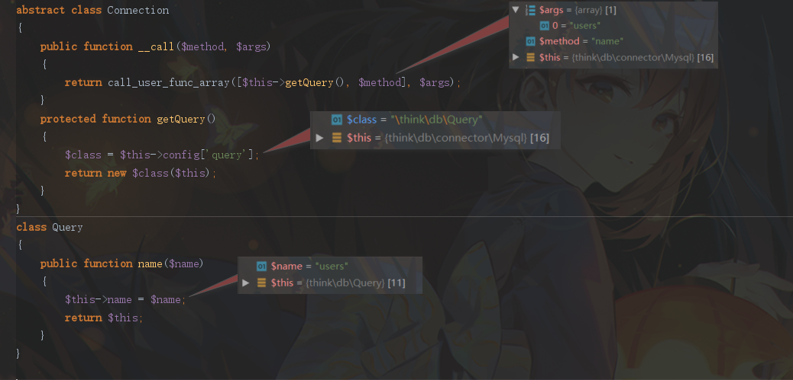

跟进项目 ThinkPHP-Vuln 复现 ThinkPHP 的历史漏洞
漏洞简述
本次漏洞存在于 Builder 类的 parseData 方法中。由于程序没有对数据进行很好的过滤，将数据拼接进 SQL 语句，导致 SQL注入漏洞 的产生。漏洞影响版本： 5.0.13<=ThinkPHP<=5.0.15 、 5.1.0<=ThinkPHP<=5.1.5 。
环境搭建
1 | $ composer create-project --prefer-dist topthink/think=5.0.15 v5.0.15 |
安装后，因为默认 framework 版本为 5.0.24 ，所以将 composer.json 文件的 require 字段设置成如下：
1 | "require": { |
然后执行 composer update 将 framework 版本更新至 5.0.15 。进入 /application/index/controller/Index.php 修改代码如下：
1 |
|
接着本地创建数据库：
1 | create database tpdemo; |
进入 /application/database.php 配置本地数据库后，在 /application/config.php 中开启 app_debug 和 app_trace
1 | // 应用调试模式 |
漏洞复现
1 | http://127.0.0.1:8000/?username[0]=inc&username[1]=updatexml(1,concat(0x7e,user(),0x7e),1)&username[2]=1 |
漏洞分析
首先跟进第一句： $username = request()->get(‘username/a’);
通过 Request::get 方法获取 GET 传入的数据，然后调用 Request::input 方法获取 $data 数据，其中通过 array_walk_recursive 对 $data 数组中的每一个元素，都调用了 Request::filterValue 方法进行 过滤处理
当检测到字段中有如下关键字时，将会在字段末尾增加一个空格：
1 | EXP|NEQ|GT|EGT|LT|ELT|OR|XOR|LIKE|NOTLIKE|NOT LIKE|NOT BETWEEN|NOTBETWEEN|BETWEEN|NOTIN|NOT IN|IN |
而我们 payload 显然是不含有这些关键字的，所以这些过滤处理并没有造成影响
接着跟进第二句，也就是数据库操作语句：db(‘users’)->insert([‘username’ => $username]);
首先通过 helper.php 调用 Db::connect 方法。该方法中调用 self::prarseConfig 获取数据库配置信息参数 $options 后，接着实例化 \think\db\connector\Mysql 类并返回该类的实例化对象 self::$instance[$name]
接着 helper.php 中调用 Mysql::name($name) 方法，传入的参数 $name 为表名 users

因为 Mysql 类中没有 name 方法，所以调用了其父类 \think\db\Connection 类的 __call 魔术方法， __call 方法通过 getQuery 方法返回 \think\db\Query 类对象，再通过 call_user_func_array 调用 Query::name 方法。 Query::name 方法返回一个 Query 类对象
以上是 db(‘users’) 部分处理，即初始化数据库配置信息。返回 \think\db\Query 对象。接着执行 db(‘users’)->insert([‘username’ => $username]); 。即调用 Query::insert 方法
Query::insert 方法中，通过 parseExpress 方法获取配置信息后，再调用 $this->builder->insert 方法来生成 $sql 语句，此处 $this->builder 为 \think\db\builder\Mysql 类对象。最后再调用 execute 来执行生成的sql语句
所以我们最后跟进 $this->builder->insert 方法，来看看是如何生成sql语句的
因为 Mysql 类继承于 Builder 类，所以最终是调用 Builder::insert 方法。该方法首先调用 parseData 方法来处理我们传入的数据，进入 switch 语句的判断，当 $val[0] 为 inc 时，调用 parseKey 方法对 $val[1] 参数，即我们的 注入payload 的存储位置进行处理，而跟进 parseKey 方法。会发现该方法只是用来解析数据，并没有对数据进行 过滤检测处理 。所以直接返回了原本的 $val[1] 然后拼接上 ‘+’ . floatval($val[2]) 。组成了参数 $result 返回给 insert 方法中的 $data 。之后就是生成 insert 语句：INSERT INTO `users` (`username`) VALUES (updatexml(1,concat(0x7e,user(),0x7e),1)+0)。最后执行触发 报错注入。